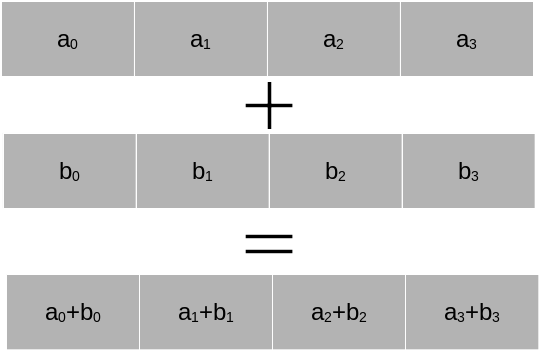

Archer numpy example for the same problem along with profiler output
The numpy library for efficient numeric computing#
Performance of lists for aggregate numeric data#
Often it is essential to hold a set of related numeric values in a variable e.g. a dataset of voltage, current and temperature measurements from a scientific experiment. Although, python provides built-in compound data structures like lists (for mutable data), tuples (for immutable data) and sets (for unique, non-repeating data), these are general purpose containers that have not been specifically optimised for numeric computing.
A list can contain elements of different types of data. For example, an entity of any data type can be a member a list. To obtain this flexibility of being a general purpose container, the underlying implementation trades-off various aspects of performance (e.g. list elements may not always be allocated contiguous memory chunks). A python library called numpy provides a specialised data container known as ndarray that is capable of handling the performance demands of high performance computing, and forms the basis of the modern scientific computing stack.
Performance of loops on aggregate data#
In scientific computing, it is a common requirement to handle large data sets and perform mathematical operations on them. The traditional method of accessing elements in a dataset by looping through them individually (to perform element-by-element computations) does not scale well in terms of performance for large data vectors.
In numeric computing, we care about performance of (nested) loops reading/writing to/from arrays of floats/doubles.
Often performing same operation on all elements (individually, pairwise, or across >2 arrays)
Explicit loops in Python have very significant overhead
Type checking is done for each element (even though all elements of an array of same type)
Array operations are not vectorised by CPython (the reference implementation)
SIMD vectorisation#
One way to facilitate such large-scale computations is to take advantage of a bank of floating point units on modern processors known as SIMD units as illustrated below.

While such a construct is not available natively in python for numeric computations, the numpy library provides one.
Using the numpy library for numeric computing#
numpy is a third party library usable within python projects that implements efficient data containers for handling numeric computing requirements. Numpy defines a fast array data type that is scalable to arbitrary dimensions. It provides a huge amount of operations on this array type including all common linear algebra operations. For instance, the ability to ‘broadcast’ array operations is particularly useful to perform numeric operations on non-identical (but still meldable to be compatible) array shapes.

NumPy (“Numeric Python”) provides:
Statically typed, fixed-size multidimensional arrays (matrices) - type
numpy.ndarrayLike C arrays wrapped in Python objects
Linear algebra operations, random number generation
Fourier transforms, polynomials etc
Fast precompiled functions for numerical routines
Efficient storage (contiguously in memory) and execution
https://docs.scipy.org/doc/numpy/user/whatisnumpy.html
Numpy can perform vectorised operations on all elements of arrays with a single function call
The requirements.txt provided as part of setting up an isolated python environment for this workshop already includes the numpy library, and therefore it can be readily imported for use in our projects. The recommended method of importing numpy functionality within our project’s python codes is as follows:
import numpy as np
This allows us to access the methods of the numpy library using the np namespace. This prevents clashing of several popular function names implemented within numpy from similarly named entities from the standard library or other third party libraries. There are several features provided by numpy such as slicing and provision of shared access data views held in numpy’s ndarrays. For a basic overview of using numpy, please refer to the following resources:
Exercise: numpy vs native looping over lists for adding two vectors#
First import numpy for use in our codes using the recommended syntax
import numpy as np
N = 1000000 # choose a fairly large, realistic array size in scientific problems (say a million elements)
Let us add two vectors of size N.
First using native python lists#
X_native = range(N)
Y_native = range(N)
Z_native = [0]*N # pre-allocate a result list of the same size
and loops ….#
%%time
for i in range(N):
Z_native[i] = X_native[i] + Y_native[i]
CPU times: user 378 ms, sys: 17.2 ms, total: 395 ms
Wall time: 395 ms
List comprehension vs loops#
Using python’s list comprehension facilities can be ever so slightly faster than the conventional loop syntax (using an explicit loop statement and an indented block of body of code to be repeated). However, this still executes the loop to construct the result list, but has just a slightly more pythonic syntax that is sometimes preferred
%%time
Z = [X_native[i] + Y_native[i] for i in range(N)]
CPU times: user 252 ms, sys: 26.4 ms, total: 279 ms
Wall time: 278 ms
Now, switch to using Numpy arrays#
X_numpy = np.arange(N)
Y_numpy = np.arange(N)
Z_numpy = np.zeros(N) # pre-allocate a result vector initialised with zeros
and performing vectorised addition instead of loops …#
%%time
Z_numpy = X_numpy + Y_numpy
CPU times: user 3.53 ms, sys: 3.33 ms, total: 6.86 ms
Wall time: 5.95 ms
We achieved a few orders of magnitude speedup!
Exercise: Accelerating the performance of CFD code with numpy arrays#
In the cfd_numpy directory, we have provided a refactored version of the CFD code that uses Numpy arrays rather than Python lists, which also replaces loops with vectorised operations. Inspect and understand the numpy version of the code. In particular, notice how the absence of loops results in much reduced code clutter, which improves readability by conveying the program’s intent better.
Navigate to the cfd_numpy directory, and run the program with the same problem size as before, i.e. a 128 x 128 grid (scaling factor of 4) and 10000 Jacobi iterations:
prompt:/path/to/cfd_numpy> python cfd.py 4 10000
The timing output of the program should reveal a good improvement in the speed e.g.
2D CFD Simulation
=================
Scale factor = 4
Iterations = 10000
Initialisation took 0.00024s
Grid size = 128 x 128
Starting main Jacobi loop...
...finished
Calculation took 1.52996s
Need to go faster!#
We achieved a decent speedup of the CFD code by replacing lists and loops with numpy arrays and vectorised operations, but let us investigate if further speed-up is possible.